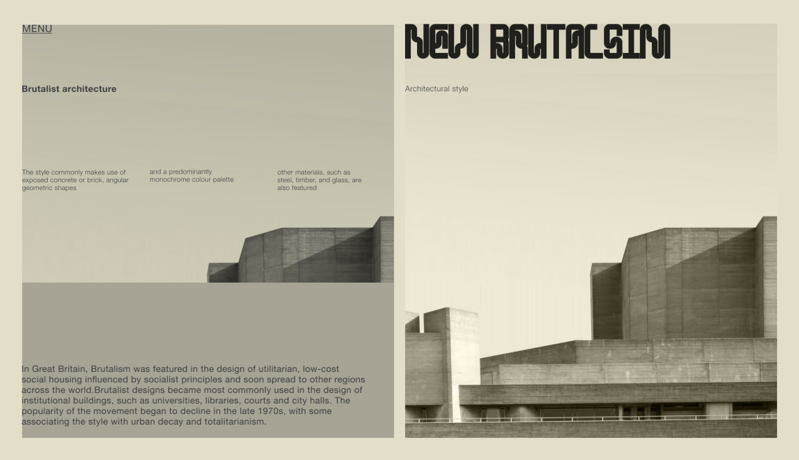

Bend is a font created with inspiration from the imagery of bent metal/materials and abstract home decor stemming from a love of abstract art, shapes, and furniture. The name was chosen to reflect the commonality in all the inspiration photos gathered before the inception of the typeface — they were all bent in some way shape or form. In the end, a distinctive monospace, display typeface was established that consists of a cohesive glyph family that when used at large scales — can bring a new dynamic to any design.
